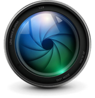
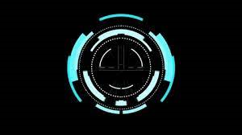
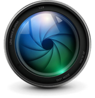
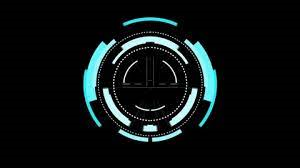
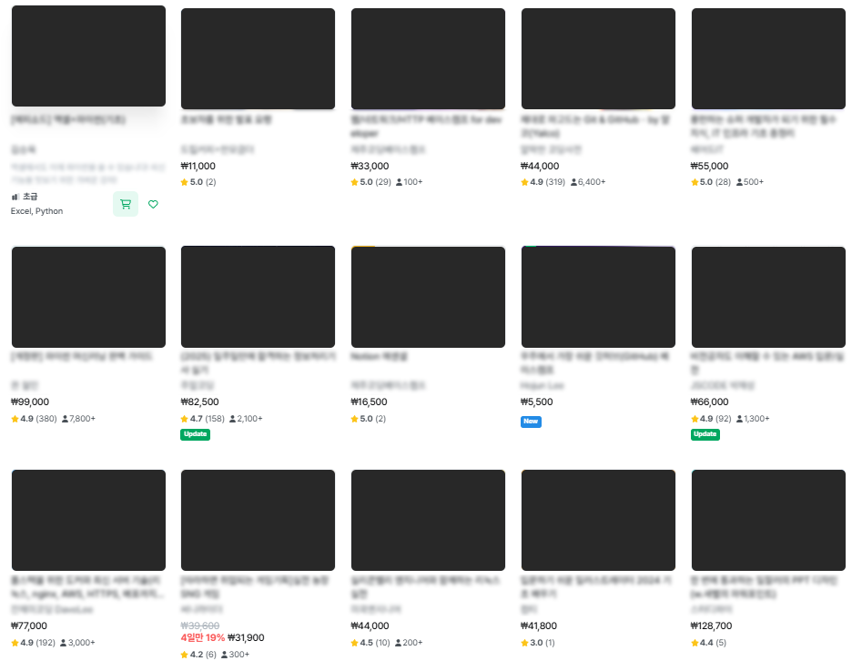
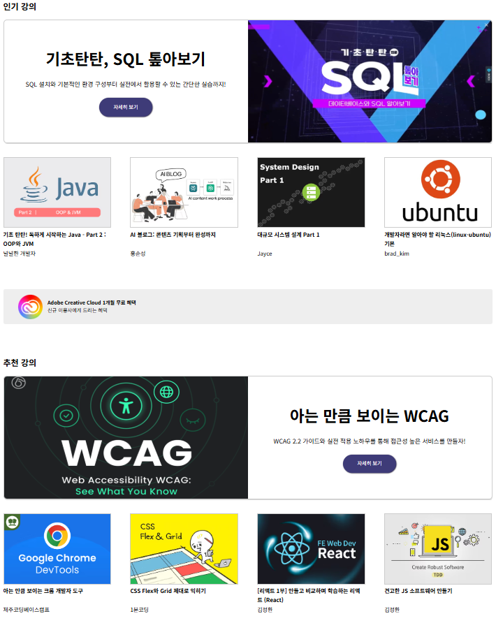
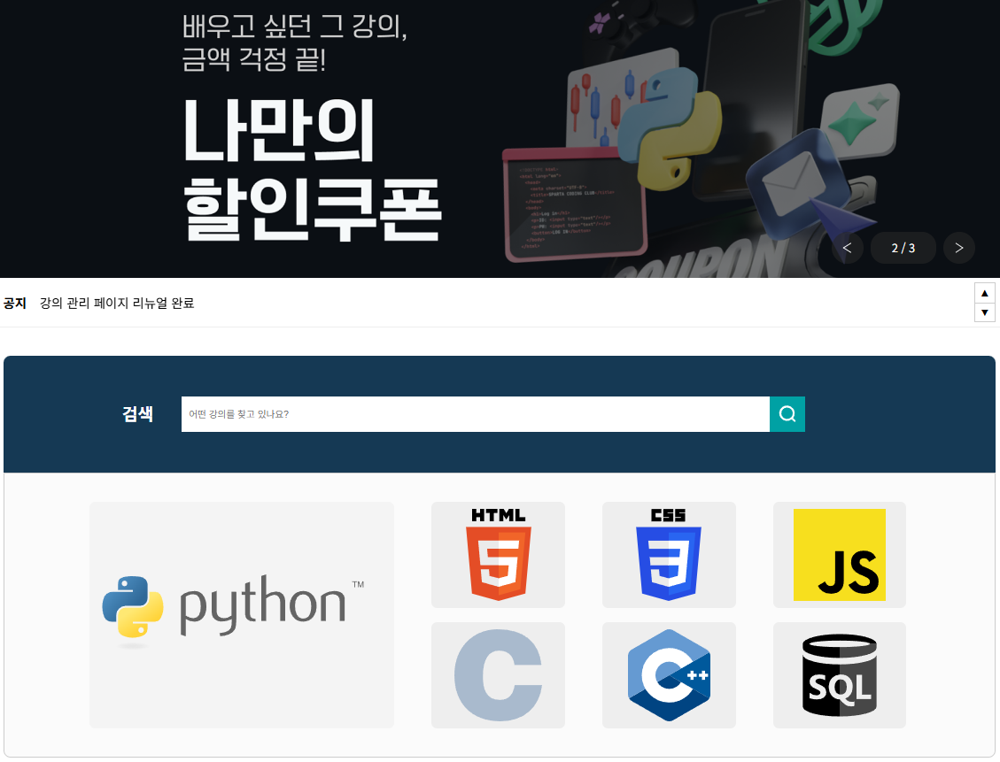

About CatchCode
캐치코드는 온라인 코딩 학습 사이트입니다. 주 컨텐츠는 코딩을 주제로 한 온라인 강의이며, 이후 더 다양한 주제로 확장될 수 있습니다. 또한 현재 제공되는 서비스 외 학습에 도움이 되는 서비스가 준비되면 언제든지 적용할 준비가 되어있는 사이트입니다.
Naming
"Catch + Code"
온라인 코딩 학습 사이트이기 때문에 중요한 것은 코드이고, 중요한 코드를 캐치해내자는 의미를 담음과 동시에 세상의 다양한 암호(code)들을 포착(catch)해 풀어나가자는 의미 또한 담았습니다.
Slogan
"세상의 암호들을 붙잡다"
캐치코드의 의미를 드러낸 슬로건입니다. 세상의 다양한 진리와 궁금증들을 풀어나가자는 의미가 담겨있습니다.
Symbol
캐치코드의 심볼은 렌즈와 조준선 모양이 들어가 중요한 내용들을 꼭 포착하자는 의지를 나타냅니다.
 



Color
캐치코드의 색상은 디지털 하면 떠오르는 색상인 녹색과 파란색과 관련된 색상들 중 사이트와 어울리는 색상들을 선정하였습니다. 어두운 Indigo, white를 기본으로 하며 어두운 Blue와 Teal을 보조적으로 사용합니다.
Logo
어두운 계열 색상을 배경 색상으로 지정해야 할 때, 로고의 색상은 흰색으로 합니다. 밝은 계열의 색상이 배경 색상일 경우에는 흰색을 사용하지 않습니다.
Concept
레이아웃을 다양하게
온라인 코딩 강의 사이트들을 둘러보고, 대부분의 온라인 코딩 강의 사이트들의 메인페이지 레이아웃이 너무나 단조롭고 가독성이 떨어짐을 느꼈습니다. 한 줄에 4~6개의 강의가 나열되고 그것이 반복될 뿐인 레이아웃들은 저에게 지루한 느낌 또한 주었습니다.
강의사이트 대부분의 레이아웃
언젠가 강의 플랫폼의 웹페이지를 만들어보겠다는 저의 목표를 이룸과 동시에 메인 페이지가 단조로운 레이아웃에서 조금이나마 벗어난 웹사이트를 제작하는 것을 목표로 하였습니다.
캐치코드의 레이아웃
Details
메인페이지
메인 페이지의 첫 구성은 배너, 공지사항, 검색창, 인기 주제 섹션으로 되어있습니다.
우선 이벤트 및 인기 강의를 띄워 사이트 이용자들의 주목을 이끌어내기 위하여 배너 섹션을 맨 처음에 위치시켰고, 공지사항이 눈에 잘 띄게 하기 위해 그 바로 밑에 공지사항 섹션을 배치했습니다.

검색창 및 인기 주제 섹션을 통해 원하는 강의를 바로 찾아볼 수 있습니다. 인기 주제 아이콘을 누르면 페이지가 넘어가 해당 주제의 강의 목록이 뜹니다.
배너 섹션
슬라이드 번호가 표시되며, 화살표 버튼을 통해 다음 슬라이드로 이동할 수 있습니다.
공지사항 섹션
Swiper 기능이 적용되었으며, 공지사항 목록이 세로로 넘어갑니다. 사용자가 위 아래 버튼으로 조작할 수 있습니다.
강의 후기 섹션
Swiper 기능으로 다음 리뷰 화면으로 넘길 수 있습니다. 화살표 아이콘으로 조작 가능합니다.
FAQ 섹션
질문 목록을 클릭하면 답변이 나타나고, 다시 누르면 숨겨지는 기능을 넣었습니다.
추가로, 열리고 닫힌 상태에 따라 화살표 아이콘이 같이 움직입니다.